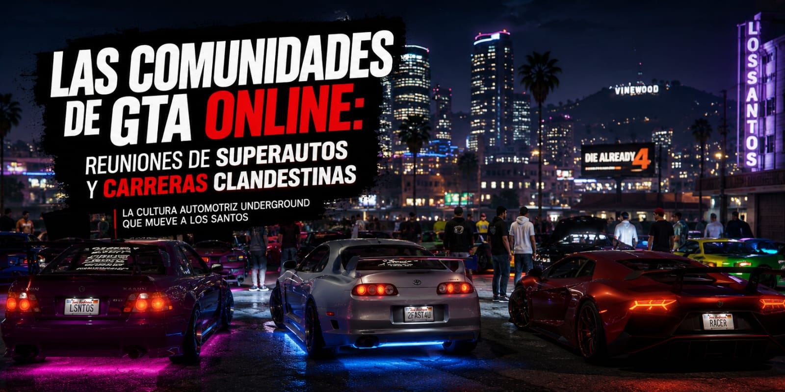
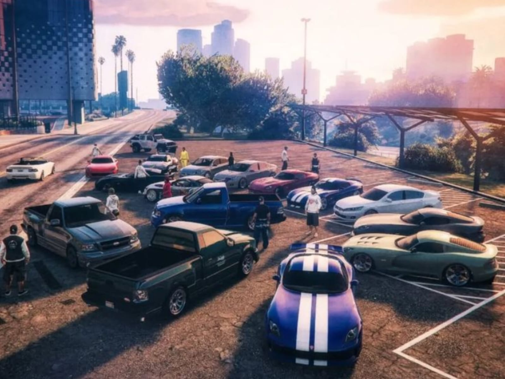
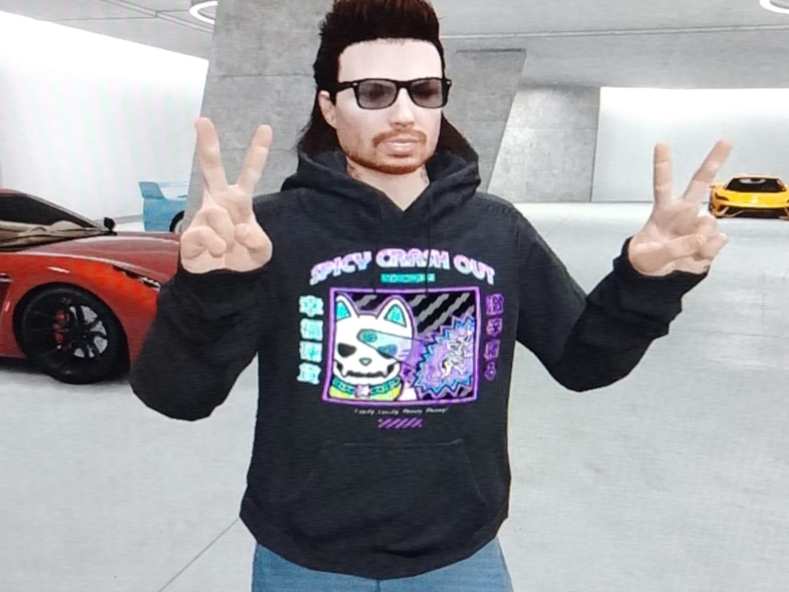
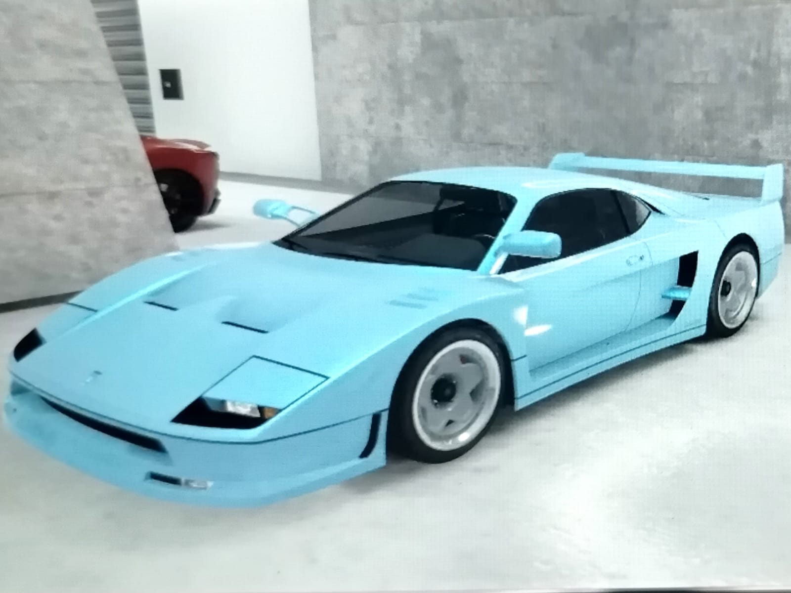

Las comunidades ocultas de GTA online
12 junio | 12:00 PM

Mientras millones de jugadores recorren las calles de Los Santos entre persecuciones y caos, existe una comunidad mucho más discreta dentro de GTA Online que ha transformado el juego en un verdadero universo automovilístico.
Se trata de grupos organizados que realizan reuniones clandestinas de autos, carreras callejeras y eventos inspirados directamente en la saga Rápido y Furioso.
Lejos de las explosiones y los atracos tradicionales del videojuego, estas comunidades se enfocan en el tuning, la personalización y la cultura automotriz virtual.
Los jugadores modifican sus vehículos al detalle, recreando modelos icónicos del cine y organizando encuentros nocturnos en estacionamientos, puertos y carreteras escondidas de Los Santos.
Una cultura automovilística dentro del videojuego
Algunos eventos llegan a reunir decenas de jugadores conectados simultáneamente, formando caravanas de superdeportivos, muscle cars americanos y autos japoneses modificados al estilo street racing.
Muchos participantes utilizan chats de voz para coordinar rutas, carreras ilegales, competencias de drift y sesiones fotográficas virtuales.
La influencia de Rápido y Furioso es evidente. Vehículos inspirados en Dominic Toretto, Brian O’Conner y Han aparecen constantemente en estas reuniones acompañados de neones, pinturas personalizadas y estilos tuning agresivos.

Más que un videojuego
Para muchos jugadores, estas reuniones representan mucho más que entretenimiento. Se han convertido en espacios donde comparten su pasión por los autos y crean comunidades alrededor de la cultura automotriz.
Con el paso de los años, GTA Online evolucionó más allá de un simple videojuego de acción y hoy también funciona como un punto de encuentro para fanáticos del tuning y las carreras callejeras virtuales.
En un mundo digital donde cada detalle puede personalizarse, Los Santos se ha convertido en el escenario perfecto para recrear el espíritu de las reuniones clandestinas que hicieron famosa a la saga Rápido y Furioso.

Mi primera experiencia en GTA Online
Todo comenzó cuando Jul me invitó a jugar GTA Online. Como lleva años en el juego y forma parte de comunidades automovilísticas, fue quien me mostró todo lo que ofrece este mundo virtual.
Tras crear mi personaje y elegir algunas propiedades y vehículos, empecé a recibir llamadas y mensajes con diferentes misiones. Una de mis primeras misiones fue transportar medicamentos sin chocar el vehículo, algo que resultó más divertido de lo que esperaba.
Más adelante recibí un encargo para fotografiar animales exóticos. Tomé mi auto y me dirigí a las montañas, donde encontré conejos y ciervos, pero la misión terminó cuando un tigre apareció de repente y me atacó.
Después me reuní con Jul, quien me llevó a conocer su colección de autos modificados. Entre todos, mi favorito fue un Ferrari F40 azul celeste. Incluso dimos un paseo en él antes de visitar una exposición de autos JDM organizada por otros jugadores.
Esa experiencia me hizo descubrir que GTA Online va mucho más allá de las misiones. Detrás del juego existen comunidades dedicadas a los automóviles, los encuentros , creando espacios donde los jugadores comparten una misma pasión.
Las comunidades de GTA Online también cumplen un papel importante fuera de los encuentros y exhibiciones. Los jugadores pueden unirse a amigos, crear equipos y colaborar para completar misiones más complejas. Como todavía me considero una jugadora principiante, en varias ocasiones he invitado a Juliano a mi partida para que me ayude con algunos desafíos. Esta posibilidad de cooperar con otros jugadores hace que la experiencia sea mucho más divertida y demuestra el fuerte sentido de comunidad que existe dentro del juego.
